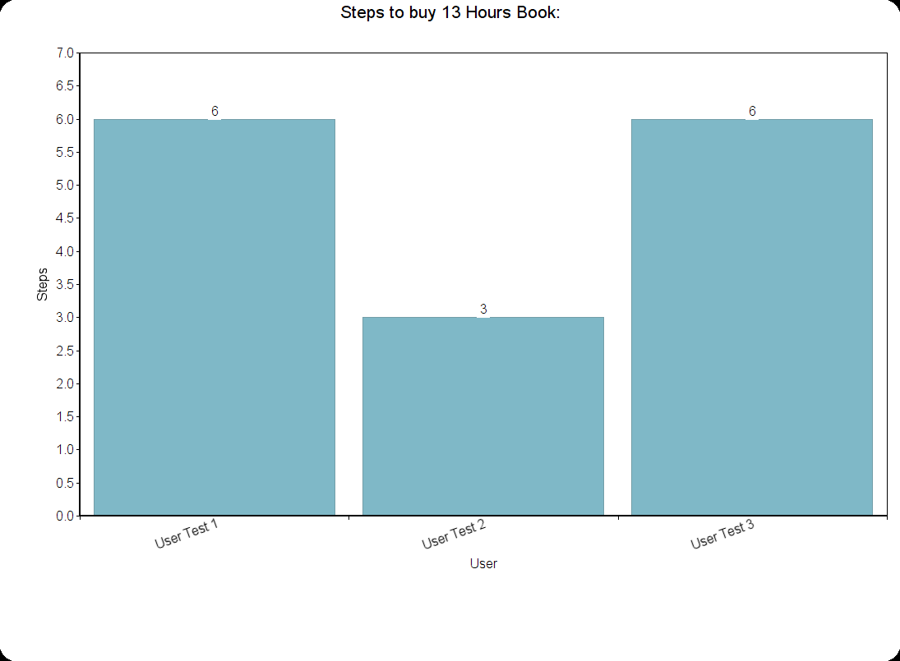

Usability Test Summary:
We are testing the usability of buying a book for a Kindle through Amazon.com. Given a user willing to participate and take this simple test, we will record their observations and actions.
The Test:
We are recording the number of steps it takes for the user to get from the home page to the Kindle E-Book of "13 hours" to be sent off to the accounts Kindle.
Script that was used for the test:
Download PDFNotes about the test:
- The user will do this test while being watch and is encouraged to talk out the steps that they go through in their mind.
- Using only the premade account
- Does not need to have an Amazon.com account or a Kindle
- The user's names will not be referenced in the results.
- User's total amount of steps to accomplish this test will be put into a chart for recording.
- Participants are random volunteers that range from a variety of ages and technological backgrounds.
Result of the test:
It was fascinating to see the thought process they went through to accomplish the same goal of getting "13 Hours" eBook on to a Kindle. Interestingly enough, all users went to the Search bar at some point or another. Users were all able to accomplish the goal, and the fastest user was able to it in only three steps! It is interesting to see how many ways a user was able to accomplish this task on Amazon.com. In conclusion, instead of there only being one way to accomplish this task, there are multiple workflows a user can take to accomplish the same task.
Next Steps:
The results of the test were not enough to make any educated decisions on the process of buying an eBook to a user's Kindle through Amazon.com. Furthermore, more testing would be needed to come up with any further thoughts about if something actually should be recommended as a change to any of the possible workflows.
The key take away from this test is though that within no more than six steps from the home page, a user can have the eBook purchased and sent to their Kindle device.